Blatt: die sechs Stimmungen
Dasselbe für Blatt — nur ist die Einheit hier keine Vorlage,
sondern eine Stimmung. Je vier Würfe nebeneinander.
Warum das anders aussieht als beim Atelier.
Blatt hat keinen Katalog. Es würfelt aus dem Vorrat der gewählten
Stimmung, und zwei Blätter derselben Stimmung sind nie gleich — zu
entscheiden ist deshalb nicht ein Bild, sondern ein Vorrat. Die vier
Würfe je Zeile sind dieselben Seeds bei allen sechs (7, 1234, 88117,
42424), damit die Zeilen vergleichbar sind.
Das Relief ist hier aufgedreht. Auf dem Papier ist es fast
unsichtbar, bis man darüberreibt — das ist der ganze Reiz von Blatt.
Zum Beurteilen wäre ein leeres Blatt aber nutzlos, deshalb sind die
Höhen gestreckt (gemessen liegen sie je Wurf in einem engen Band, hier
auf den vollen Umfang gezogen). So sieht man, was man freilegen würde.
5 bleiben
1 bleibt, mit Anmerkung
Die sechs
Feinwerk neubleibt, mit Anmerkung
vier Würfe · Achsen 14/14/20/16 · Bänder 8/8/10/10
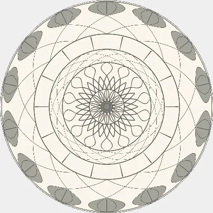
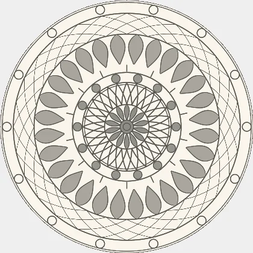
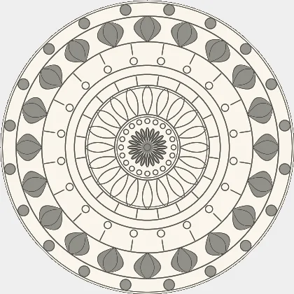
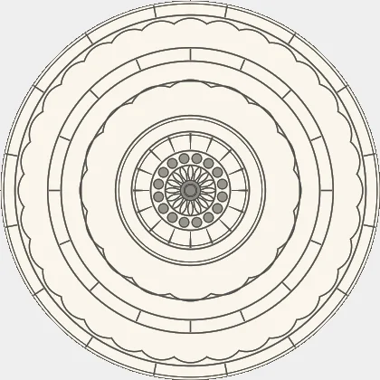
Vorrat: 14 bis 20 Achsen, sechs bis acht Bänder, Striche von 0,0040 bis 0,0056 — enger und feiner als alle anderen. Gemessen über sechzig Würfe: 17,1 Achsen und 9,2 Bänder gegen 16,1 und 7,6 bei „Fülle", dem bisher dichtesten. Der Unterschied ist da und sichtbar.
Was mahnt: Das vierte Beispiel oben. Manche Würfe kommen bandlastig heraus — viele Ringe, wenig Ornament darin. Der Vorrat gewichtet Perlen und Strahlen hoch, aber wenn der Wurf mehrfach „plain" zieht, bleibt ein Reifenstapel übrig. Das ließe sich beheben, indem „plain" aus dem schmalen Vorrat fliegt.
Fülle bleibt
vier Würfe · Achsen 14/14/18/16 · Bänder 7/7/8/8
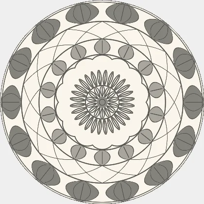
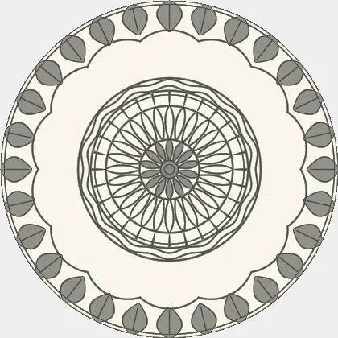
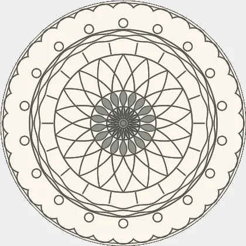
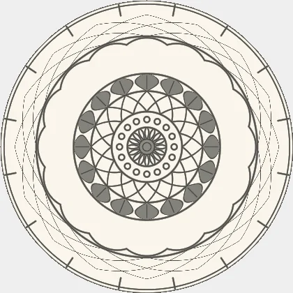
Der bisher dichteste Kranz: Blüten und Gitter breit, Perlen und Strahlen schmal. Bleibt unverändert — Feinwerk tritt daneben, nicht an seine Stelle.
Klarheit bleibt
vier Würfe · Achsen 12/12/18/12 · Bänder 6/6/7/7
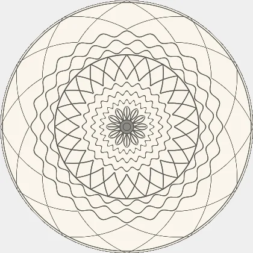
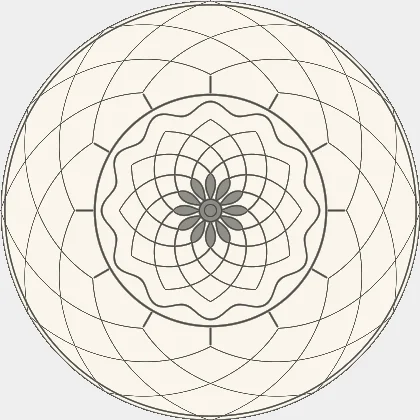
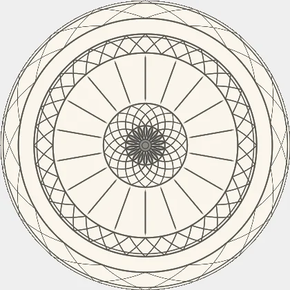
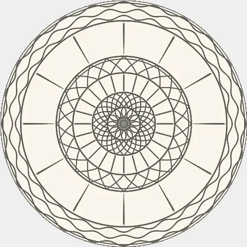
Gitter und Strahlen, hohe Achsenzahlen, sehr klare Netze. Von allen sechs das geometrischste.
Blüte bleibt
vier Würfe · Achsen 8/8/14/10 · Bänder 6/6/7/7
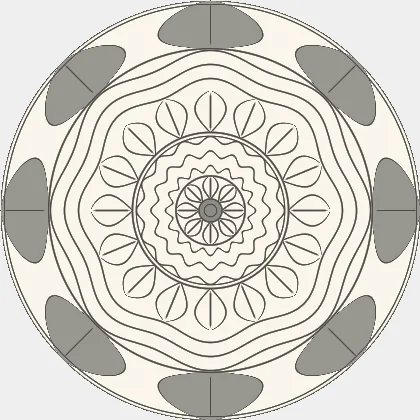
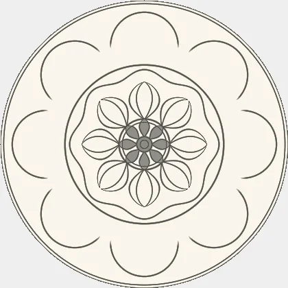
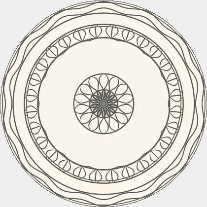
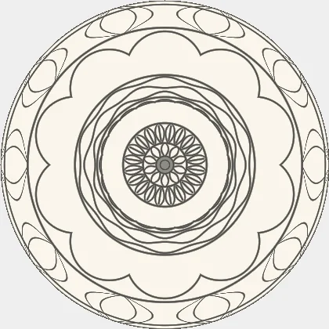
Blütenblätter und Bogenränder, mittlere Dichte. Der freundlichste der sechs.
Ruhe bleibt
vier Würfe · Achsen 6/6/12/8 · Bänder 5/5/6/6
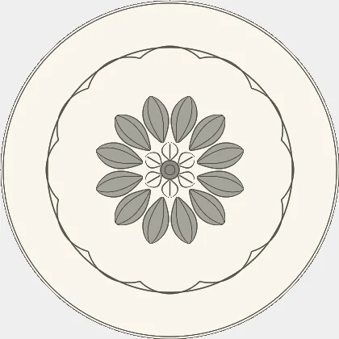
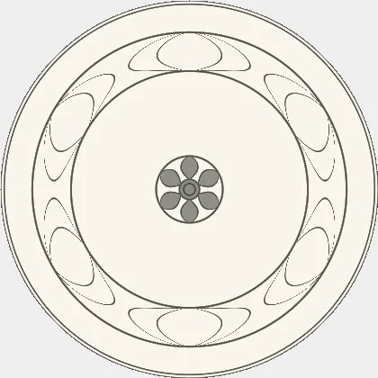
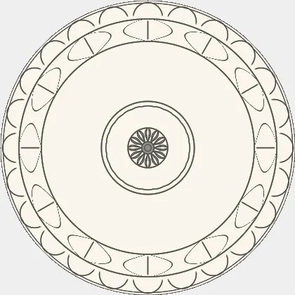
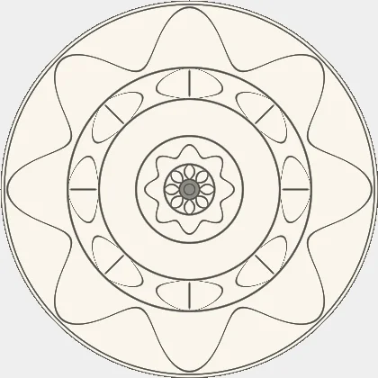
Wenige Achsen, wenige Bänder, viel leere Fläche — mit Absicht. Das zweite Beispiel oben ist fast leer, und das ist kein Fehler: Wer „Ruhe" wählt, will genau das.
Anlage bleibt
vier Würfe · Achsen 4/4/4/4 · Bänder 19/7/7/14
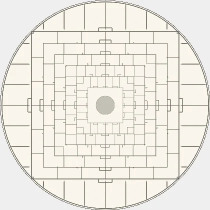
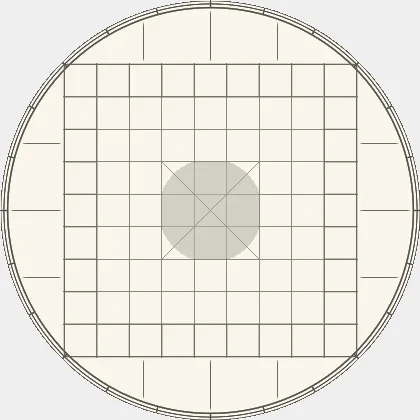
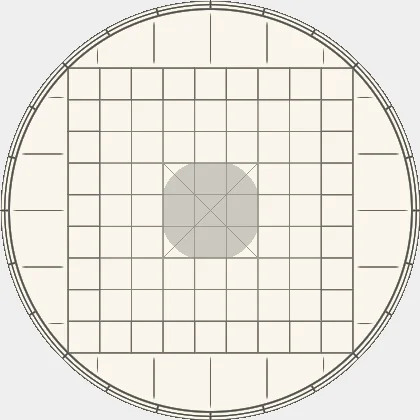
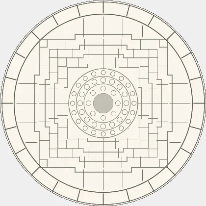
Fällt aus der Reihe, und zwar gewollt: kein Kranz aus Bändern, sondern ein Grundriss. Zieht je Blatt eine von acht Grammatiken — dieselben acht, die im Atelier unter „Anlagen" zur Wahl stehen.
Was hier zu entscheiden wäre
Die fünf alten stehen nicht zur Wahl — sie sind seit Fassung 3.13
unverändert, und gesicherte Blätter hängen an ihnen. Zur Entscheidung
steht allein Feinwerk, und dort auch nur eine Frage: ob
„plain" aus dem schmalen Vorrat fliegt. Dann kann kein Wurf mehr als
Reifenstapel herauskommen; dafür wird die Stimmung ein Stück
gleichförmiger.
Was hier bewusst nicht steht: Zopf, Kette und Zelle. Im Atelier
tragen sie seit Fassung 2.34 drei Motive, in Blatt wären sie neue
Bandarten. Sicher sind sie — solange nur diese Stimmung sie zieht,
verschiebt sich kein Wurf der anderen fünf. Sie gehören aber in einen
eigenen Schritt mit eigenem Messwert.